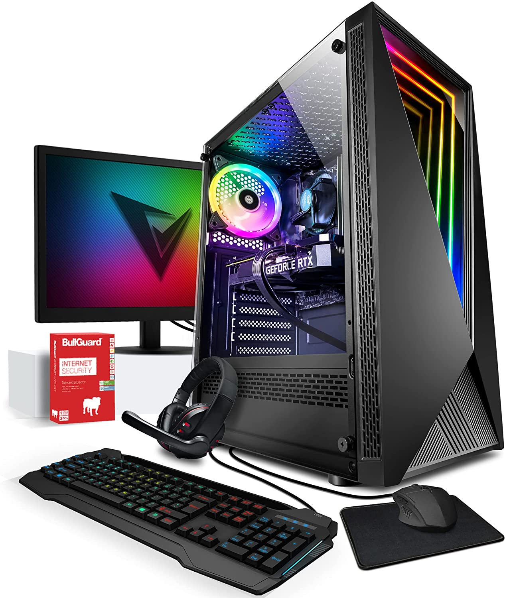

PC Gaming
Un pc-gaming es un tipo de computador de escritorio diseñado para ejecutar programas gráficos y de otra índole muy pesados. ¿Tienes problemas para ejecutar tus juegos y programas preferidos? Infórmate de cual es el ordenador gaming perfecto para ti aquí.

Antes de empezar cabe mencionar que existen otros tipos de ordenadores de gaming de los que también hablaremos en esta entrega, tales como los portátiles gaming y laptops gaming.
Tipos de PC Gaming
Vamos a dividir los tipos de computadoras gaming en los siguientes:
Portátiles y laptops gaming: Son ordenadores portátiles convencionales, móviles, pero con la elevadísima potencia de un pc gaming. El principal problema que poseen es que la miniaturización de los componentes (hacerlos pequeños para que pueda ser portátil) los hace más costosos, lo cual junto con su dificultad si quieres ampliarlos después, provoca que sea la opción perfecta solo si de verdad necesitas poder desplazarlo.
Escritorios Gaming: Es el concepto que la mayoría entendemos por "PC GAMING". Son ordenadores de mesa con una potencia muy elevada, lo cual permite la ejecución de programas extremadamente pesados. Su principal problema, como la mayoría de los sobremesa es que no es móvil. Pero pueden ser ampliados después de montados.


¿Como saber si un PC Gaming es para ti?
Hoy en día, 2022, un ordenador es esencial para cualquier persona, pero no siempre hace falta la misma potencia o los mismos requerimientos. Un PC gaming es un ordenador de muy altas capacidades, y por tanto, son muy importantes los matices. Para identificar un buen pc gaming hay que fijarse en las siguientes cosas:
CPU: La CPU es, de forma rápida, el cerebro del ordenador, y por eso sería necesario tener uno bueno. Para poner datos a esto, para un pc gaming, consideramos que debería contar como mínimo con un AMD Ryzen 5 (o con su equivalente Intel i7) para poseer una potencia satisfactoria.
GPU: La GPU es el cerebro gráfico, es decir, el encargado de los calculos de gráficos para aligerar en la CPU. Recomendamos que la GPU sea una GeForce RTX 1080 o superiores.
RAM: La RAM es una memoria de acceso rápido que posee el ordenador y que se borra cada vez que se reinicia el mismo. En ella se guardan cosas como las variables de los programas o, dicho en lenguaje cotidiano, los datos momentáneos que el programa guarda, como por ejemplo los puntos de un juego. Recomendamos que tenga 16GB de RAM como mínimo.
Disco: Es el espacio del que dispone el ordenador para guardar archivos. Recomendamos un mínimo de 512GB de disco para no tener problemas de desbordamientos al instalar muchas aplicaciones.
Precio: Creo que este punto está más que claro... Cuanto mejor para nuestro bolsillo, mejor para nosotros. La media de precio va desde los 1500€ hasta los 15000€

El método que les propondremos para seleccionar un ordenador es el siguiente: Obtendremos una puntuación para el pc y el que mejor puntuación tenga será el mejor. Se obtendrá así:
Si cumple con lo especificado para la CPU: +10
Si cumple con lo especificado para la GPU: +8
Si cumple con lo especificado para la RAM: +6
Si cumple con lo especificado para el Disco: +5
Buscar dentro de los que tengan un precio asequible para usted, y dentro de los igualmente puntuados, elegir el más barato.
¿Puedes montar tu propio PC Gaming?
Existen muchas opciones hoy en día con respecto a los PC y ordenadores gaming (OJO, ES INVIABLE PARA PORTÁTILES GAMING). Una que está adquiriendo mucha popularidad últimamente es la de montar tu propio PC gaming. Vamos a ver sus principales ventajas:
Adaptación: Al seleccionar tú los componentes que vas a usar, podrás escoger la potencia necesaria para tus propósitos pero sin excederse, evitando también gastos y excesos innecesarios.
Precio: Al comprar los componentes por separado y luego ensamblarlos, puedes obtener grandes diferencias económicas con respecto al precio que hubieses pagado por el producto final ya ensamblado.
Estos beneficios están muy bien, pero para conseguirlos hay que hacer un esfuerzo y ensamblar los componentes, por no hablar de la selección de componentes compatibles. Para todo ello, dejamos aquí un vídeo explicando el proceso entero.